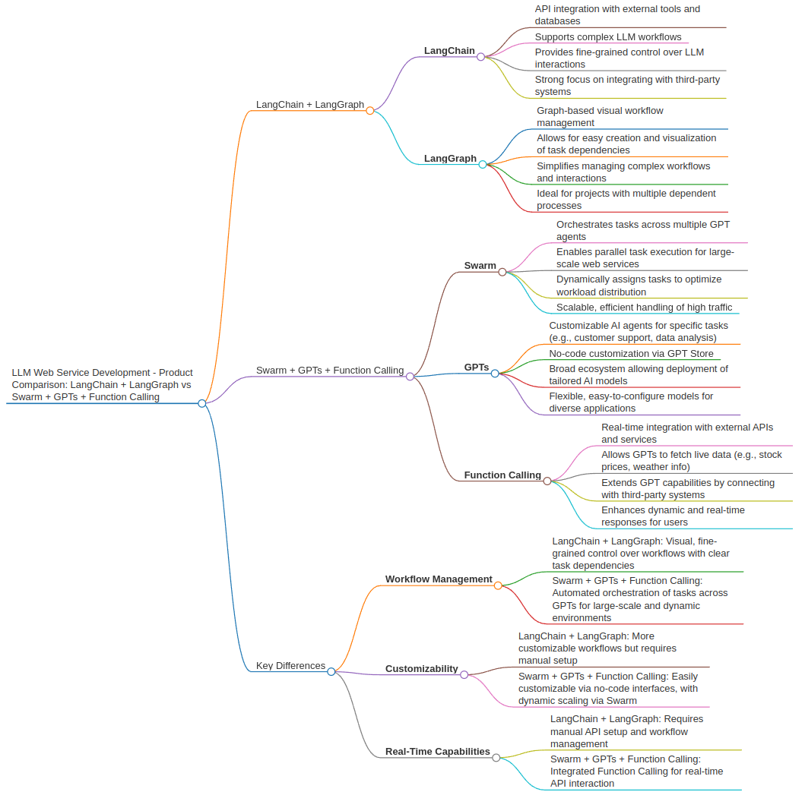

LangChain + LangGraph vs. OpenAI Swarm + GPTs + Function Calling: A Comparison for Web Service Development
At NinjaLABO, we’re always on the lookout for the most effective tools and platforms for AI-powered web service development. As we explore different architectures for building scalable AI services, two major approaches stand out: LangChain + LangGraph and OpenAI’s Swarm + GPTs + Function Calling. Both have powerful features, but they serve different needs depending on the complexity and goals of your project.
In this post, we’ll compare these two ecosystems, breaking down their strengths and weaknesses, and provide insights into which one might be the best fit for your next project. Let’s dive into a detailed comparison between LangChain + LangGraph and OpenAI’s Swarm + GPTs + Function Calling.

What is LangChain + LangGraph?
LangChain is a framework that helps developers build applications powered by language models. It’s especially useful when you need to integrate various external data sources, APIs, or tools into a language model workflow.
LangGraph complements this by allowing users to visually design and manage complex workflows using a graph-based structure. With LangGraph, you can define nodes and edges to represent tasks and their relationships, making it easier to handle complex dependencies in workflows.
These two tools work together to enable sophisticated, structured workflows in AI-driven web services. While LangChain provides the API integration, LangGraph offers a powerful visual interface for managing the tasks and flows.
What is OpenAI Swarm + GPTs + Function Calling?
On the other hand, OpenAI’s Swarm, GPTs, and Function Calling offer a highly scalable and customizable environment for AI services.
Swarm enables orchestration of multiple AI agents that work together on complex tasks, dynamically distributing them across agents. GPTs allow for custom AI models tailored to specific tasks or industries, with a user-friendly no-code interface. Function Calling allows GPT models to interact with external APIs and data sources, executing specific functions on demand.
This combination of tools enables developers to quickly build scalable, real-time, and highly customizable AI services. The GPT ecosystem also offers extensive plugin support, making integration with external services much more seamless.
Comparison Table: LangChain + LangGraph vs. OpenAI Swarm + GPTs + Function Calling
| Feature | LangChain + LangGraph | OpenAI Swarm + GPTs + Function Calling |
|---|---|---|
| Primary Functionality | Workflow management with LLM integration | LLM-based service customization and orchestration with real-time data integration |
| Customization of Models | Highly customizable workflows with LangChain’s API integrations | GPTs offer no-code customization for specialized AI models |
| Workflow Management | LangGraph provides visual graph-based design of tasks and dependencies | Swarm enables dynamic task distribution among AI agents |
| Function Calling | Not natively integrated | Function Calling allows real-time API interaction |
| Ease of Use | Requires knowledge of LLM workflows and visual programming | GPTs offer no-code customization, more beginner-friendly |
| Real-time Data Handling | Handled through API integration, more setup required | Function Calling for instant data access |
| Scalability | Dependent on LangChain’s infrastructure | Highly scalable with Swarm orchestrating multiple AI agents |
| Integration with External Data | Requires external setup via LangChain’s API tools | Function Calling allows seamless data integration |
| Multimodal Support | Not emphasized | GPT-4 multimodal support for vision and text |
| Developer Community & Ecosystem | Growing community, more niche | Large community, extensive plugin ecosystem with GPT Store |
| Complexity Management | Requires detailed setup and manual configuration | Swarm automates much of the complexity through agent orchestration |
Which Approach is Best for Your Web Service Development?
The decision between LangChain + LangGraph and OpenAI Swarm + GPTs + Function Calling comes down to your project’s specific needs and your development team’s experience.
- Choose LangChain + LangGraph if your project requires:
- A highly structured and customizable workflow for LLM-based tasks.
- Fine-grained control over task dependencies and API integrations.
- A visual interface for managing complex workflows, especially useful for teams with deep knowledge of LLM systems and infrastructure.
- Choose OpenAI Swarm + GPTs + Function Calling if you need:
- Fast, scalable AI-powered web services with minimal setup.
- No-code customization options to tailor AI models to specific needs.
- Real-time API interaction and dynamic task distribution via agent orchestration.
- Access to a broader ecosystem, including plugins, external data integration, and GPT store for sharing or downloading pre-built models.
Final Thoughts
Both LangChain + LangGraph and OpenAI Swarm + GPTs + Function Calling are robust solutions for building LLM-powered web services, but they cater to different types of development teams and project requirements. If your goal is deep customization and complex workflow management, LangChain + LangGraph may be the way to go. However, if scalability, ease of use, and rapid development are priorities, OpenAI’s Swarm + GPTs + Function Calling is likely the better choice.
At NinjaLABO, we’re constantly testing and optimizing these platforms to offer cutting-edge solutions to our clients, and this analysis helps guide our decisions in choosing the right tools for the job.
Ready to build your next web service? Reach out to our team for expert advice and let us help you navigate the best path forward.
Explore the Platforms:
- LangChain
- LangGraph
- OpenAI Swarm
- GPTs and Function Calling